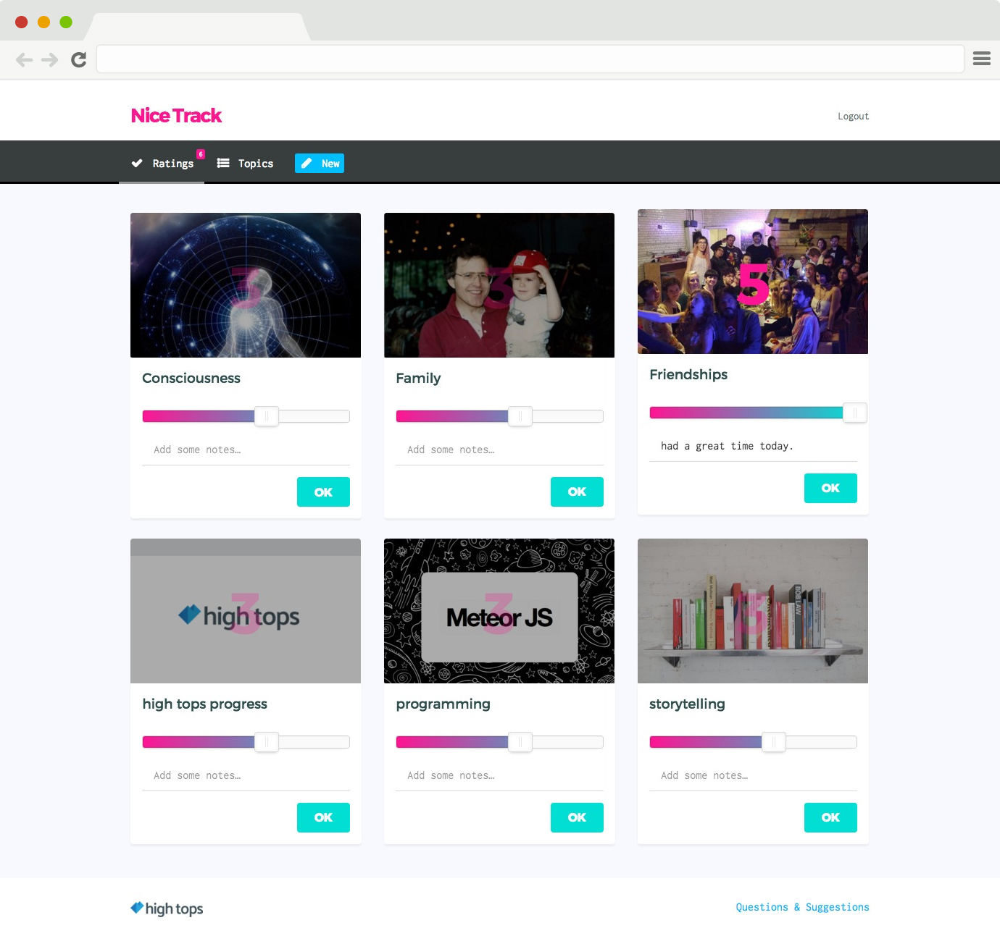
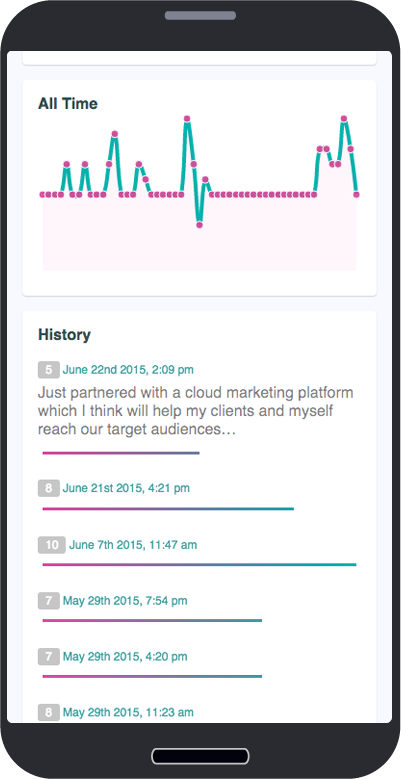

Nice Track
Nice Track is a quantitative journaling app. Everyday, a user can rate topics of interest and add a short journal entry about the rating. As more ratings are added, new charts are automatically added to provide deeper insight. I developed this with Meteor, a fullstack javascript framework.


